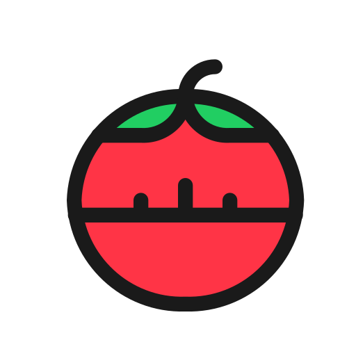

Andrea Marcucci
Web Developer | Student | Tech Enthusiast
Una calcolatrice web totalmente sviluppata da me, trovi la repository su GitHub!

Un timer per la tecnica di studio pomodoro sviluppato da me, trovi la repository su GitHub!
Un sito per la proposta di San Valentino, trovi la repository su GitHub!